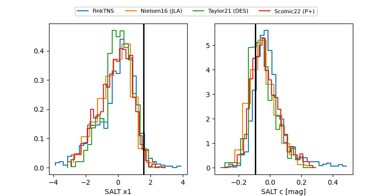

FINK: ZTF25abptxri
Lasair: ZTF25abptxri
ALeRCE: ZTF25abptxri
TNS: 2025xfi
YSE: 2025xfi
ZTF25abptxri (ztf,fink)
2025xfi (tns,yse)
equatorial (ra, dec) = (295.6630,+51.55398)
galactic (l, b) = (84.3446,+13.56166)

last ztfr=19.95
3 ztfr detections